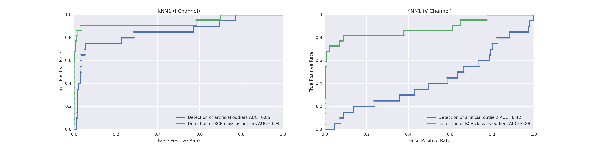
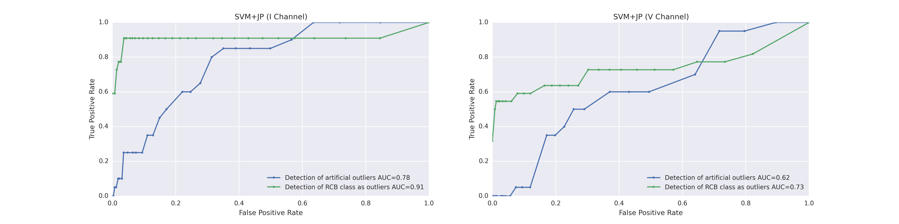
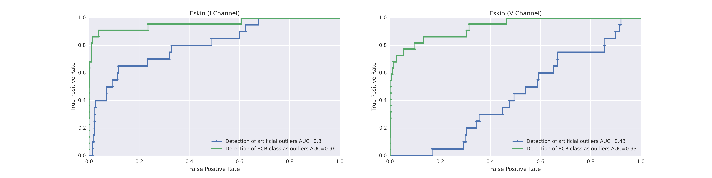

Previous Work & Methods
The Mixture of Experts approach gets its strength from combining the output of separate methods (experts) having presumably different regimes of expertise.
In this project, five oulier detection methods (modified and/or unmodified from previous work) were used on either the infrared (I) or visual (V) channels of the light curves. This gave a total of ten experts (five methods on two different channels). Here, we describe each outlier detection method and show its stand-alone performance.
We measure performance using two metrics. First, an artificial set of outliers are created (see below) and the method's ability to score them as outliers is measured. In the second method, we choose a class ('rcb') that is designated as outlier (based on initial data exploration). We then evaulate how well the method can score objects in this class as outliers.
Creation of Artificial Outliers
20 artificial outliers were created by first randomly sampling 20 light curves from the data set. Within each feature, the 20 values were randomly shuffled among the data points. Then, $n$ standard deviations (of each feature) were randomly added to each data value, where $n$ is selected from a standard normal distribution centered at 4. Figure P1 shows the outliers plotted on the PCA plane.

Figure P1. Artificial Outliers on the PCA plane, along with real data. 20 Artificial outliers (white dots, black outline) were created as described. The outliers do not seem too far removed from the main cluster of points on the PCA plane, indicating that measuring outlier detection performance with these artificial points will provide a good test of robustness of each method.
K Nearest Neighbors 1 (KNN1)
Modified from ??????. Description of what this method is. [Brandon]
Figure P2. ROC for the KNN1 method. description...
K Nearest Neighbors 2 (KNN2)
Modified from ??????. Description of what this method is. [Brandon]

Figure P3. ROC for the KNN2 method. description...
Support Vector Machine & Joint Probability (SVM+JP)
This is a supervised learning method modified from Nun et al. 2014. Breifly, a classifier is trained on data with known class labels. For each point, a membership probability vector is produced that lists the probability of its belonging to each class. Then a joint probability for the particular combination of membership probabilities is calculated. Nun et al. used a random forest classifier and a Bayesian Network to produce the joint probabilities. Outliers are then identified as the points that have low joint probabilities because class membership probability vectors similar to thiers were not been seen often enough in the training data.
Here, we modify the approach by using SVM (rbf kernel) for the classifier and a frequency table to determine the joint probabilities. In addition, an artificial class sampled uniformly from the sample space was used to train the classifier but excluded in the joint probability calculations. These modifications were found to improve outlier detection (especially excluded-group outliers) in our data set.
SVM was used instead of random forest because it can draw tigher decision boundaries around clusters of points in the same class when given an added artificial uniformly sampled class. This is necessary because outliers can be positioned far away from the initial training data points, yet be classified under a particular class solely due to its position radial to a class decision space. We found that the SVM classifier, with decision boundaries that encompass well the clusters of points for each particular class, improves detection of these kinds of outliers.
A joint probability table (with 9 bins of discretization) was used in the determination of joint probabilities in the interest of computational speed and clarity. Formulating this part of the method using a Bayesian Network may be explored in future work.
Figure P4. ROC for the SVM+JP method. In the infrared channel (left), the SVM+JP method does very well in identifying the rcb outliers, whereas it does not do significantly better than random guessing for the artificial outliers. In the visible channel (left), there is poorer performance for the rcb data.
Local Correlation Integral (LoCI)
Modified from Papdimitriou et al. 201?.

Figure P5. ROC for the LOCI method. [Brandon] description...
Eskin (Eskin)
Modified from Eskin et al. 201?.
Figure P6. ROC for the Eskin method. [Wes] description...